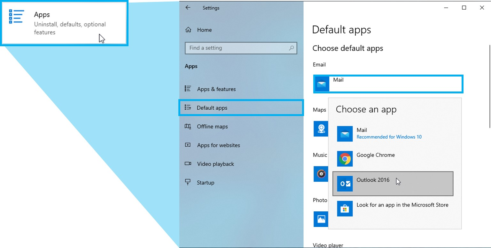

Change your Default email Application

Default your PC Email to Outlook
For this class we will be asking you to fill out and email things. This will change your defualt setting to have Outlook 2016 become your default when sending the questionairs to your Facilitator. This is a really quick Tutorial on how to make that change.

Changing your Settings

- Select your Start Menu
- Select the Settings Icon
- Select Apps (Uninstall, defaults, optional features)
- Select Default Apps from the Left Side Menu
- Change the Email from the Mail app to Outlook 2016